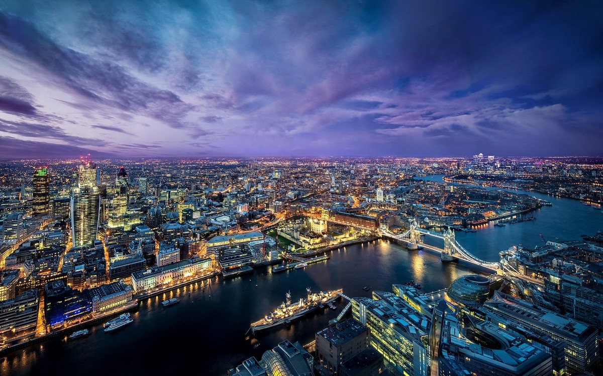

London is the capital and largest city of the United Kingdom, home to over 9 million people in its metro area. Situated along the River Thames, it is globally recognised for its cultural influence, financial power, and historic institutions — including the British Royal Family, whose official residence at Buckingham Palace sits at the heart of the city.
Why London Qualifies as a City?
London is a global metropolis with centuries of continuous development, a massive population, and a central role in international finance, arts, and governance. It is officially governed as a region made up of 32 boroughs plus the City of London, one of the smallest yet most economically powerful districts in the world.
What Advanced Facilities and Infrastructure are Available?
London features an extensive public transport network including the London Underground, the oldest metro system in the world, spanning 272 stations. Its rail network connects to every major UK region, and Heathrow Airport is one of the busiest international airports globally. The city also boasts advanced financial infrastructure, world-class universities, and cutting-edge medical research institutions.

London Fun Facts!
London's skyline includes The Shard, the tallest building in the UK at 310 metres. The city's iconic red buses and black cabs are recognized worldwide. London is home to over 170 museums, including the British Museum, which houses more than 8 million artifacts.